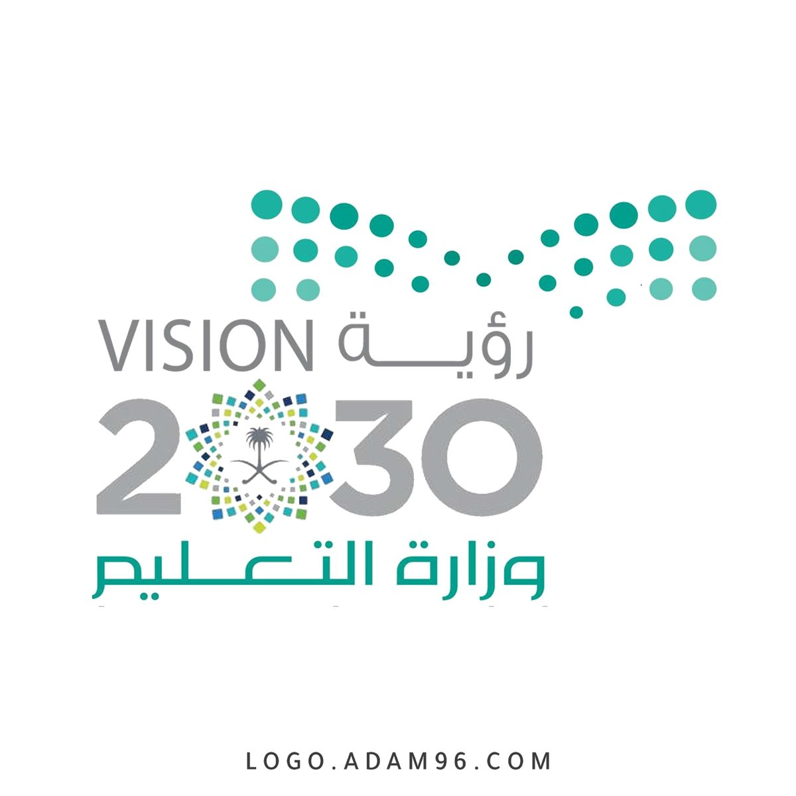

شعارات الوطن

شعار رؤية 2030 يمثل طموحات المملكة في بناء اقتصاد متنوع ومجتمع حيوي ووطن طموح.

شعار عزنا يعبر عن اعتزاز أبناء الوطن بانتمائهم وهويتهم، ويجسد القيم الوطنية والوفاء للقيادة والوطن.
مرحبا بكم في موقعي عن اليوم الوطني
اليوم الوطني السعودي يوافق 23 سبتمبر من كل عام، وهو اليوم الذي أعلن فيه الملك المؤسس عبدالعزيز بن عبدالرحمن آل سعود – طيب الله ثراه – توحيد المملكة تحت راية واحدة. هذا اليوم ليس مجرد تاريخ، بل هو قصة وحدة وطنية ومسيرة بناء قادت المملكة لتصبح واحدة من أقوى وأهم الدول في العالم.
خادم الحرمين الشريفين الملك سلمان بن عبدالعزيز آل سعود هو قائد النهضة الحديثة ورمز الحكمة والعزم. تولى مقاليد الحكم عام 2015، ومنذ ذلك الحين قاد المملكة بخطى ثابتة نحو التطوير الشامل، مع تعزيز مكانة المملكة سياسيًا واقتصاديًا على الساحة العالمية.
سمو ولي العهد الأمير محمد بن سلمان هو مهندس التحولات الكبرى في المملكة، وصاحب رؤية السعودية 2030. بفضل طموحه وإرادته، انطلقت مشاريع كبرى غير مسبوقة مثل نيوم، ذا لاين، البحر الأحمر، والقدية، التي تهدف إلى بناء اقتصاد متنوع وصناعة مستقبل مشرق للأجيال القادمة.
شعار رؤية 2030 يمثل طموحات المملكة في بناء اقتصاد متنوع ومجتمع حيوي ووطن طموح.
شعار عزنا يعبر عن اعتزاز أبناء الوطن بانتمائهم وهويتهم، ويجسد القيم الوطنية والوفاء للقيادة والوطن.
استمع للنشيد الوطني أثناء تصفح الموقع: